SOIL FOOD WEB FOUNDATION
Healing soil. Feeding humanity. Restoring the living world.
The ground beneath our farms and forests is alive. Join a global community of Soil Regenerators learning, restoring, and demonstrating the power of the soil food web on every continent.
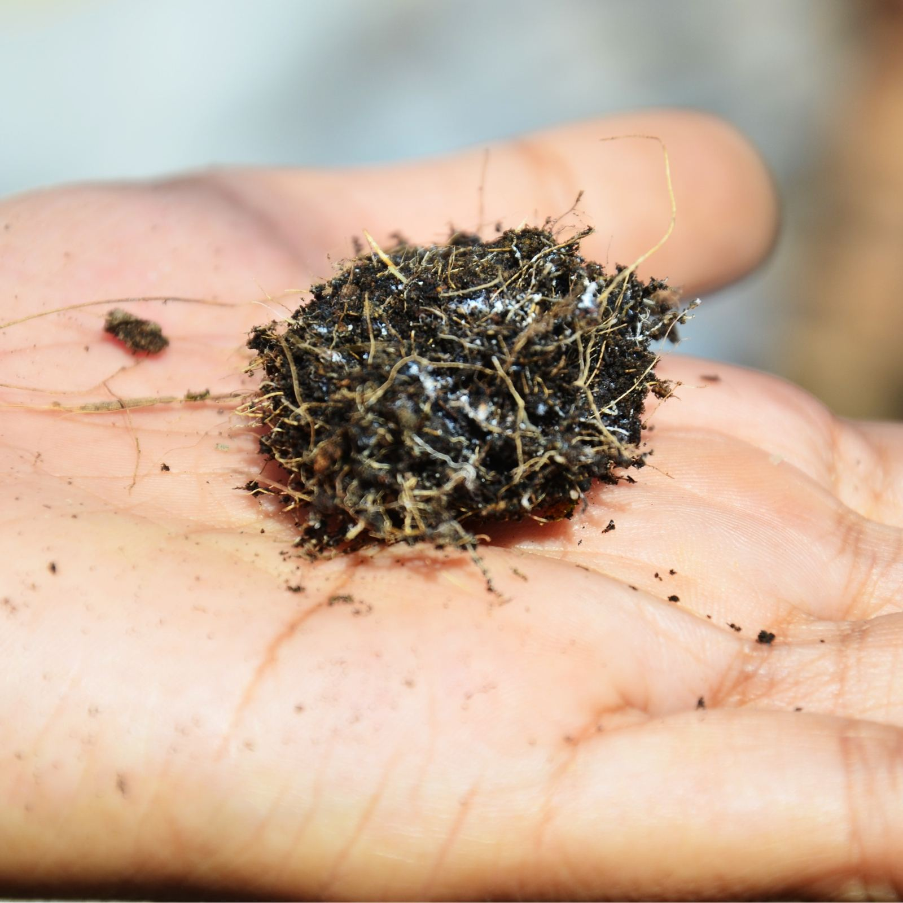


The Foundation in figures
100+
Countries in our student & practitioner community
enrollment records, confirmed August 2026
10,000+
Individuals enrolled in our programs
enrollment records, confirmed August 2026
No acreage figures anywhere, see claims rules. The years-of-research figure was removed 11 September 2026: it was derived from Dr. Ingham's first papers in 1982 rather than supplied by the Foundation, and an unverified number should not be public. Restore it with a figure and a source the Foundation confirms.
COME IN THE DOOR THAT IS YOURS
Three ways in
-
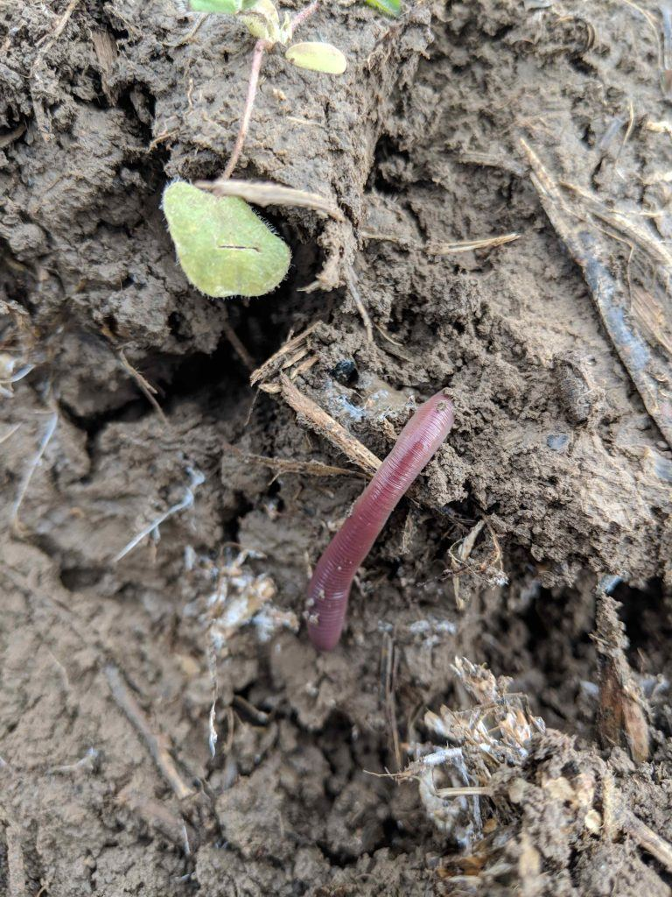
Farm with biology
Cut back on synthetic inputs and build your natural soil fertility. We’ll connect you with our team and trained practitioners to plan, implement, and monitor the transition on your operation.
Find a trained professional near you → -

Restore your land
Bring biodiversity back to degraded sites and put biology to work on remediation, from gardens and smallholdings to large landholdings and public lands.
See restoration work and start a conversation → -

Bring it to your classroom
Incorporate the soil food web methodology into your curriculum: for school systems, universities, and training programs.
See every program and price →
One drop of soil water, under the microscope
Brightfield microscopy, Soil Food Web Foundation archive
WHO WE ARE
A foundation built on living soil
For four decades, Dr. Elaine Ingham showed the world what farmers and foresters have always sensed: soil is not dirt. It is a living web of bacteria, fungi, protozoa, nematodes, and micro-arthropods that feeds plants, stores carbon, holds water, and sustains every terrestrial ecosystem on Earth.
The Soil Food Web Foundation was created to carry that work forward. We teach the science through the Soil Food Web School, pursue and share new knowledge, incubate regenerative practice in ecoregions around the world, and build the community that makes it all last.
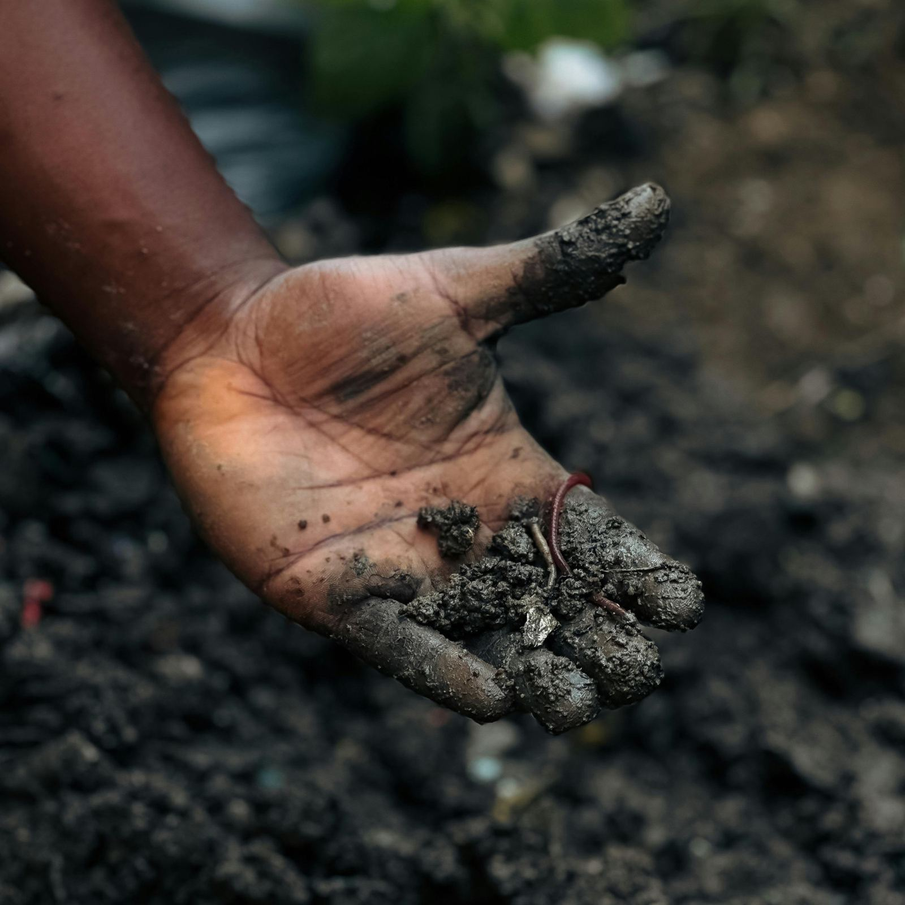
THE SOIL FOOD WEB APPROACH
Work with the life in your soil
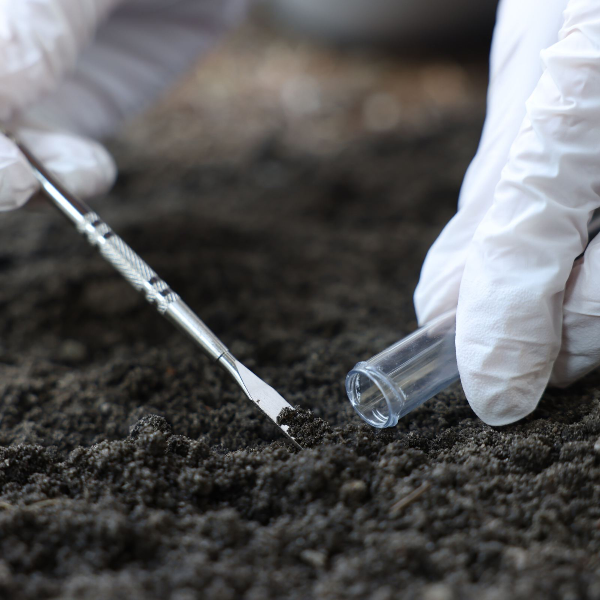
Observe and assess
Put your soil under the microscope. Identify which organisms are present, which are missing, and what that means for your plants, so every decision starts with what’s actually alive in your soil.

Incubate the biology
Grow the beneficial organisms your soil needs by making BioComplete™ compost: not just organic matter, but a living culture, built deliberately.
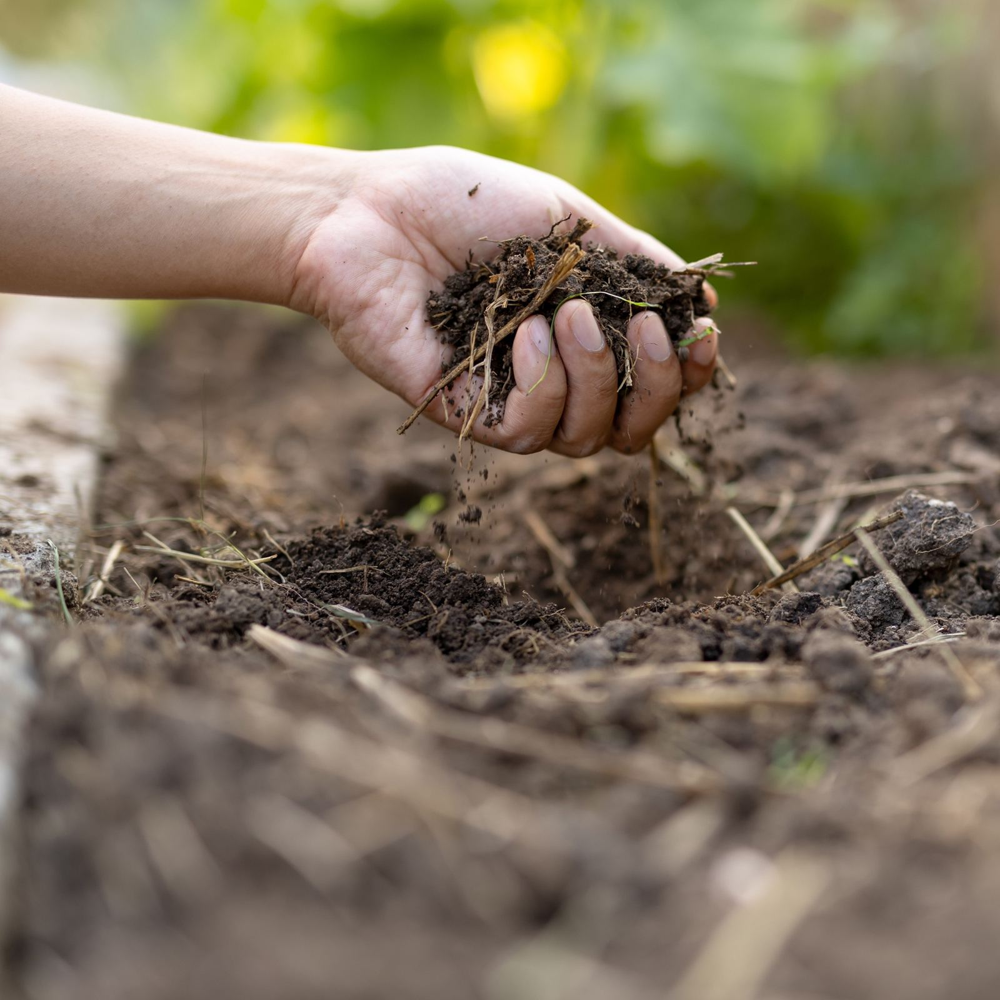
Multiply and apply
A small amount of biologically rich compost goes a long way. Compost extracts and teas multiply that life and carry it across whole fields and gardens, to the soil and to the plants themselves.
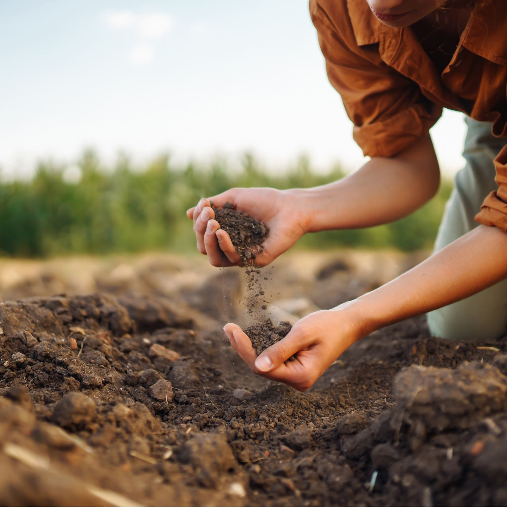
Manage and monitor holistically
Keep observing as the life rebuilds structure, cycles nutrients, and protects your plants, and adjust your practices so the benefits compound, season after season.
See case studies from the field →
reframed Sep 8 (Evan): drop tech metaphor + step count; Approach is now FOUR steps
LEARN WITH US
Customize your learning path according to your needs and goals
-
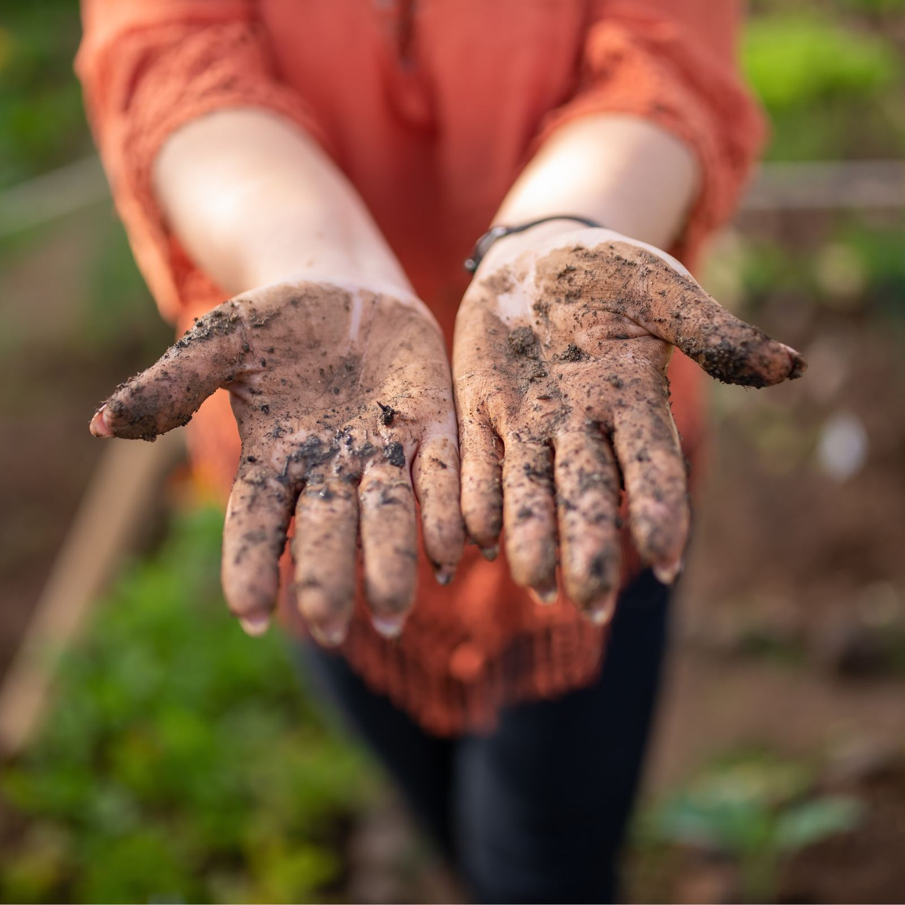
Start hereFoundation Courses
The complete introduction to the science of the soil food web. The starting point for everyone.
-
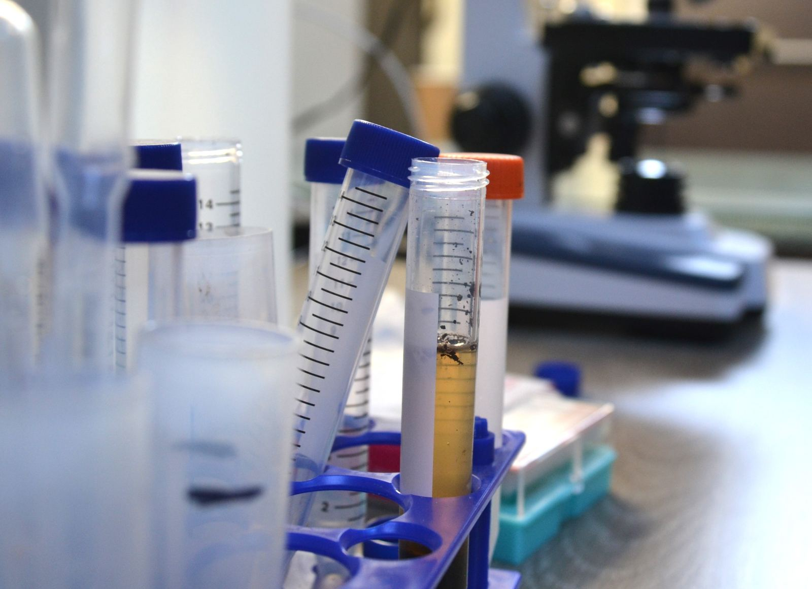
Hone your skillsAdvanced Programs
Hands-on Soil Microscopy, BioComplete™ Compost Production, Biological Liquid Amendments, and Field Trials.
-
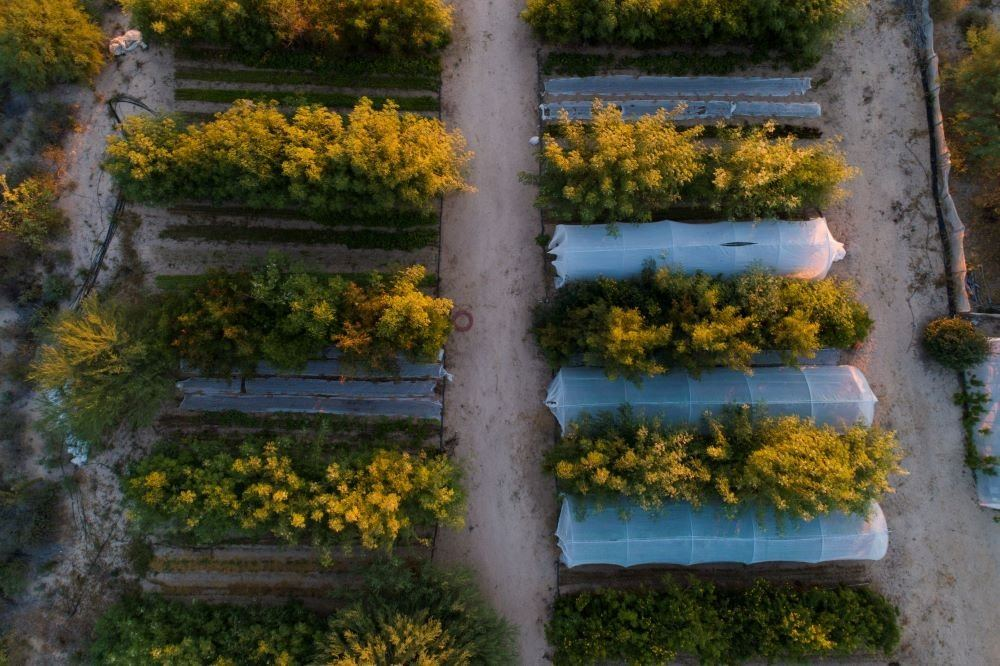
Design systemsPermaculture Design Certification
Whole-system design: water, plants, structures, community, rooted in living soil.
-
Ecosystem Restoration
Ecosystem Restoration Courses
Learn ecological principles and practical restoration techniques.
See Introduction to Ecosystem Restoration →
VERIFY sales page URL
-
In person
Workshops
Learn on real sites, meet the community, and accelerate your training.
Five cards render as a horizontally scrolling wrap-around carousel (scroll-snap; loop in production build).
WHAT’S NEW
Happening across the community
-
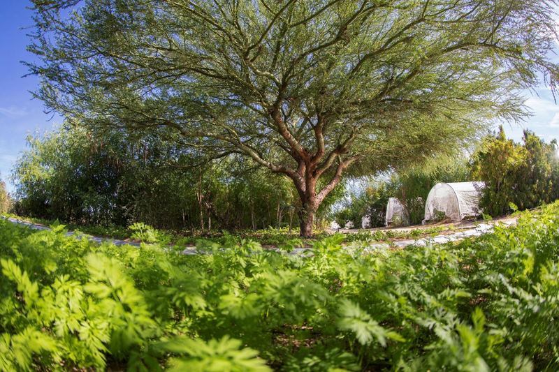
Permaculture Design Certification cohort begins
Course, cohort -
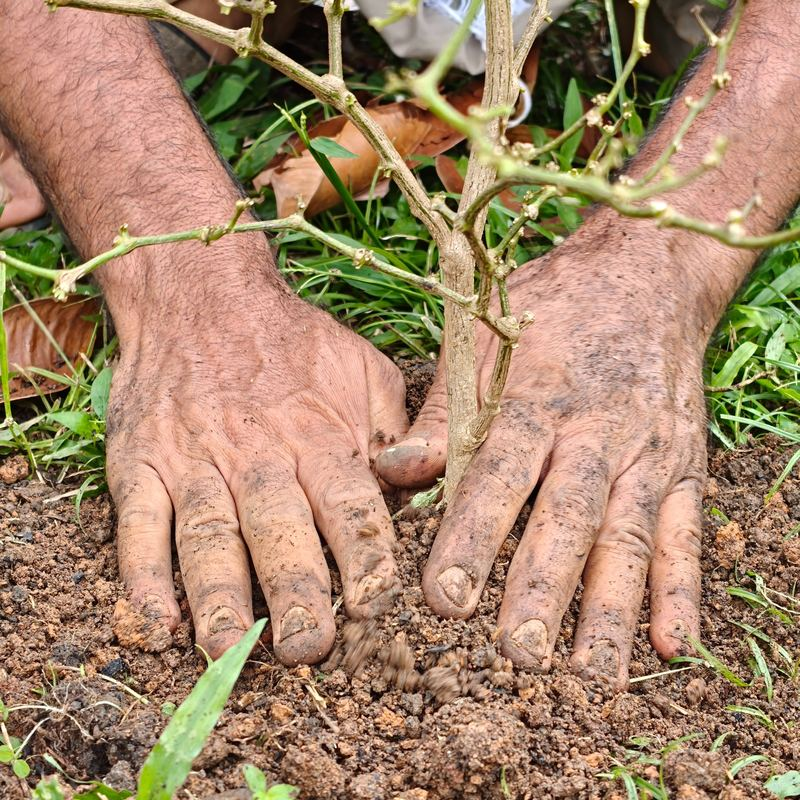
Accelerator Workshop India 2026, Coimbatore
Workshop
All events → · All news and stories →
Dynamic feed: upcoming workshop > upcoming webinar > latest impact story > latest blog post. Sample items in mockup are illustrative.
What people say
Restoring the Soil Food Web to agricultural soils restores productivity and profitability to agriculture and results in substantial levels of carbon sequestration.
soilfoodweb.com homepage testimonial. Retained at Evan's request, August 2026.
The original continues into a claim about returning atmospheric carbon to IPCC safe levels. That sentence is cut: it is a global outcome claim under the claims rule. Restore it only as a clearly attributed third-party statement if Evan wants it.
Our ecosystem
OUR ECOSYSTEM
We’re grateful to the organizations that make this work possible, and always looking for aligned partners.
- Isha Outreach Conscious Planet: Save Soil. Partner on the Accelerator Workshop India 2026.
Start a partnership conversation
One partner named so far. Every other partner name and logo file still to come. Evan.